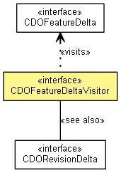

org.eclipse.emf.cdo.common.revision.delta
Interface CDOFeatureDeltaVisitor
- All Known Implementing Classes:
- CDOFeatureDeltaVisitorImpl, CDORevisionMerger
- public interface CDOFeatureDeltaVisitor

Visits feature deltas of a revision delta.
- See Also:
CDORevisionDelta.accept(CDOFeatureDeltaVisitor)
visit
void visit(CDOMoveFeatureDelta delta)
visit
void visit(CDOAddFeatureDelta delta)
visit
void visit(CDORemoveFeatureDelta delta)
visit
void visit(CDOSetFeatureDelta delta)
visit
void visit(CDOUnsetFeatureDelta delta)
visit
void visit(CDOListFeatureDelta delta)
visit
void visit(CDOClearFeatureDelta delta)
visit
void visit(CDOContainerFeatureDelta delta)
Copyright (c) 2011, 2012 Eike Stepper (Berlin, Germany) and others.